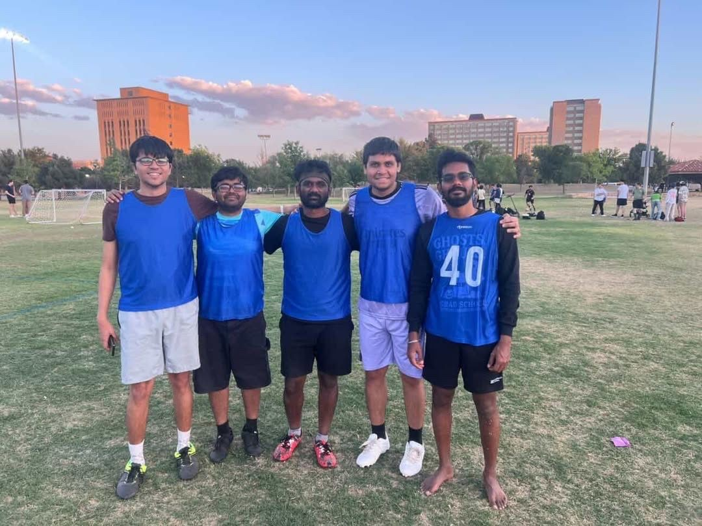
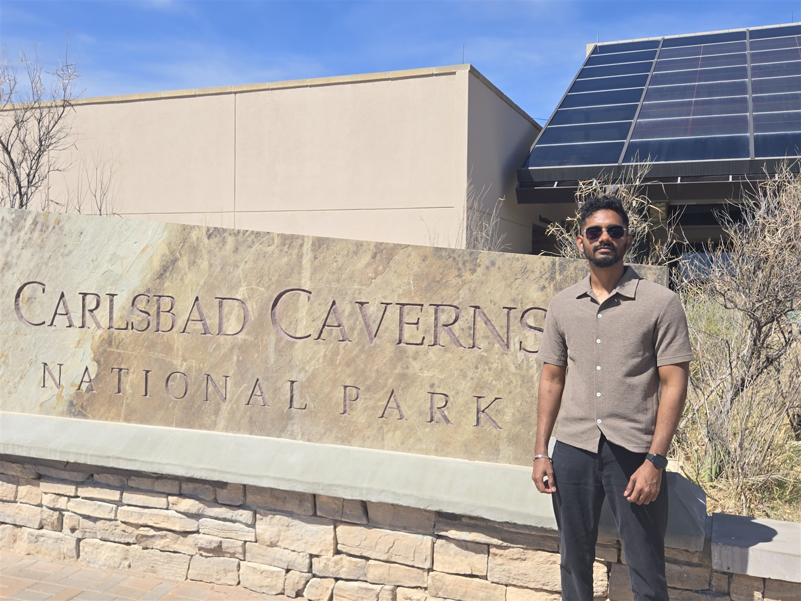
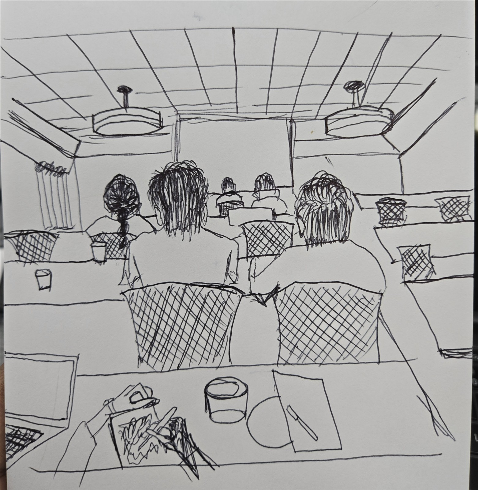
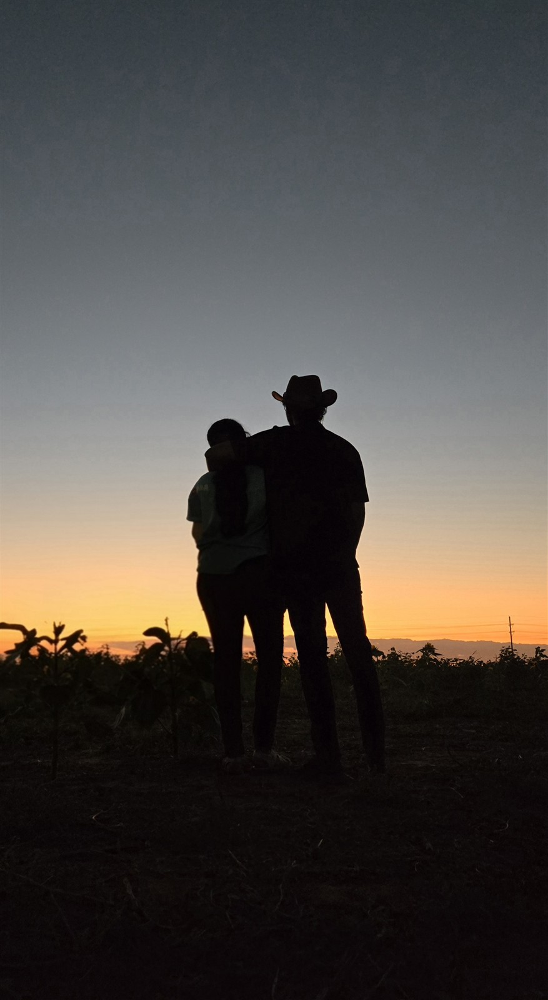

About me
I am currently pursuing my Ph.D. in Physics and Astronomy at Texas Tech University, where I work as a research assistant with Dr. Michael Fausnaugh in the Department of Physics and Astronomy. My office is in Science Building 301.
Before joining TTU, I completed my M.S. in Physics at the National Institute of Technology Calicut in 2024 and my B.E. in Electronics and Communication Engineering at Rajalakshmi Engineering College in 2021.
My current research focuses on dwarf novae. I also help with TESS operations by running Dr. Fausnaugh's pipeline for difference imaging and generating reference and root-mean-square (RMS) images. My broader academic interests include astrophysics and computational approaches to scientific problems. I enjoy working with data, simulations, and machine learning tools to better understand complex physical systems.
Outside of formal coursework and research, I use LinkedIn to document my learning journey, professional growth, and milestones as an early-career researcher.
Outside research
I like to dance, sketch, and play keyboard. I’m also usually up for a movie or an adventure somewhere new. Right now I’m reading Death’s End, the third book in the Three-Body Problem trilogy.
I play football and got to represent India at TTU’s Mini World Cup. We didn’t win, but I’m glad I got to play with this team. I also enjoy photography and working out, both just for fun.
Gallery








Photography
Skies, reflections, and details that caught my eye.